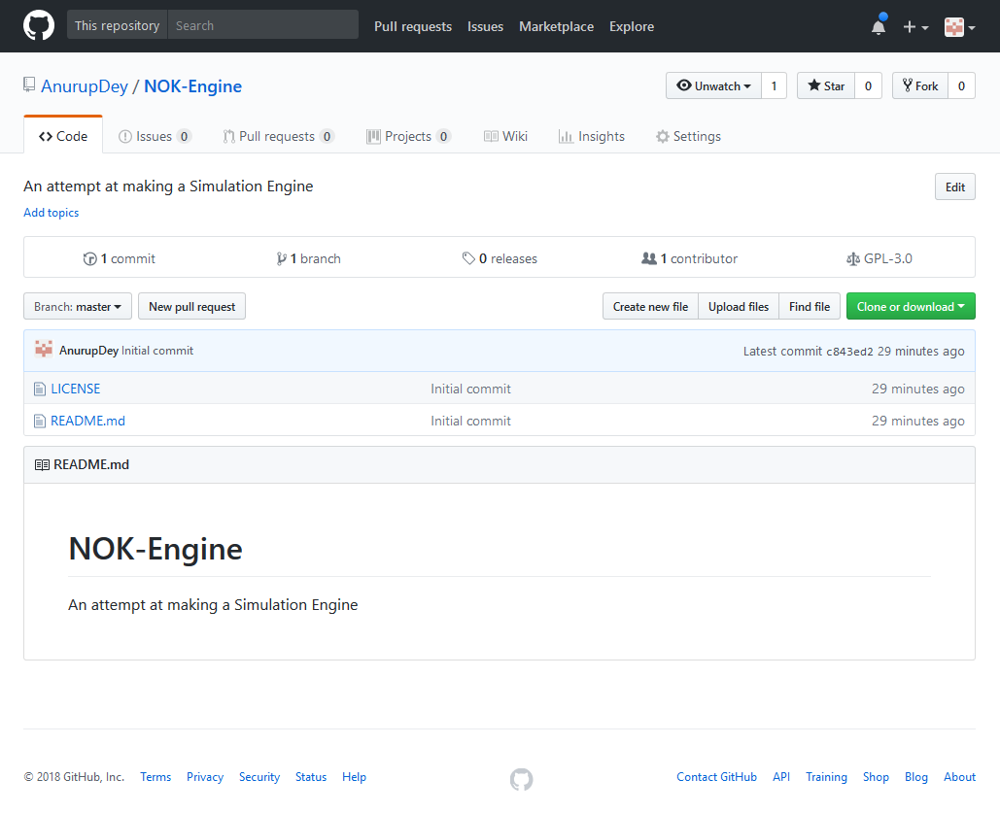

3D Simulation from Scratch - Day 00 - Setting Everything Up
I am about to make a simulation. Now, why make a simulation exactly,
and what are we going to simulate?
Well, the origional plan was to create a simulation of the universe, but lets
see how far I can take it. We might at least make a realistic version of minecraft,
where blocks don't float in the middle of the sky when blocks bellow them are removed.
Really, there is no other reason for starting this project than to see how far I can streatch a simulation. I have always wanted to do this, and also have tried to do it a couple times in the past, so I do have some idea of what needs to be done.
I am going to document each and every step of the process, so if somebody reading this wants to follow along, they can, but it is not meant to be followed along. If you follow this as a tutorial, you will end up going through the same mistakes and potentially unneccessary steps that can be avoided that I go through, since I am not a professional and will be learning, potentially from mistakes, as I go along. Either way, I thought it would be benefitial if I document the whole process.
Now, the process I will be using is definitely not the easiest way one might go about making a 3D simulation of any sort - in fact, it is deleberately the hardest. There are simpler and quicker ways to do what I want to do, but these other much simpler techniques make things simpler by hiding away the complexities so yo do not have to deal with them yourself. I want to know what these complexities are and learn how to handle them. My primary objective is to learn from this project as much as possible. That is why I choose to write every part of the simulation myself, using no external libraries or pre-built tools designed to help make things easier to make simulations - none of that.
Today I will go through the steps needed to set up everything before I actually jump in and write the code. This does not include planing and deciding on the architecture, but things such as setting up the developement environment, getting all the tools ready and so on. Here we go!
Step 1: Github

The first thing I need to do is set up the github repository. Let me first explain why I do this and what Github is.
To understand Github, we have to understand what git and source control is and why we use it. Computers are fragile machines. They are also very stupid. Sometimes they might even make you go crazy and want to kick them in anger. Yes, that happens. Then, they can also catch fire. We don't want our hard work to be lost in case anything like that happens. Also, we as humans make mistakes, big ones, or sometimes we like to try new but potentially code-breaking experiments on our code.
Git is a source control tool. What it does is allow us to create snapshots of our code as we make changes to it.Once a few snapshots have been made, or "committed", we can roll back our code to any of those snapshots with a single command. That means we do not need to worry about permanently making a mess of our code, we can just roll back to a state when everything was stable and fine.
Git also allows us to make multiple "branches"
of our code. Think of branches as separate timelines with independent snapsots in them.
Branches can be used to separate stable code from unstable code. Unstable code can be on
a saparate branch, where one can perform experiments and implement new features, while
the stable code is untouched and safe in a separate branch. This makes managing large
code bases, like how this might become, without worrying about breaking anything.
Branches can also be merged, so that the changes made in one branch will then appear in the other.

Now what Github does is host git repositories on the web (repositories or 'repos' represent the whole code base, with all the comits and branches). Github also provides tools that allows multiple people to seamlessly work on the same repo without hicups.
I Already have my Github account, so I just need to create a new repository for our new project. To do this , on the github dashboard, I hit the "New Repository" button.

This takes me to the "Create a New Repository Page", where I fill in the details and press "Create Repository".

Yes, I named it NOK-Engine. No particular reason to call it that. I might even change the name. It is a public repository, so anybody who has access to Github can view all the source code I write. I also initialized the repository with a readme and the GNU General Public License. This License basically allows anybody to use the source code in thier own projects, all or just a part of it, but with the condition that the person doing so must also release the source code of the project they use this source code in, for free. Also, it has a clause that says that I am not responsible for any harm done as a result of the use of my code on someone else's machine. So, in case you plan on deriving anything from this project, keep in mind that you are free to take everything from here.
The GNU GPL license I just included requires me to do a few things for it to be active.
- It requires that I include the full license document with the source code and the final product.
-
It requires that I include a small notice on the top of each source file I create that
looks like this:
<one line to give the program's name and a brief idea of what it does.>
Copyright (C) <year> <name of author>
This program is free software: you can redistribute it and/or modify it under the terms of the GNU General Public License as published by the Free Software Foundation, either version 3 of the License, or (at your option) any later version.
This program is distributed in the hope that it will be useful, but WITHOUT ANY WARRANTY; without even the implied warranty of MERCHANTABILITY or FITNESS FOR A PARTICULAR PURPOSE. See the GNU General Public License for more details.
You should have received a copy of the GNU General Public License along with this program. If not, see <http://www.gnu.org/licenses/>.
- Provide a way to access this license from withing the finished product, which means from within the simulation, probably on some menu or something.
So, after Github creates the repository for us, with the LICENSE.txt and a README.md files, we can start to add things to it. The repository can be viewed at https://github.com/AnurupDey/NOK-Engine .
